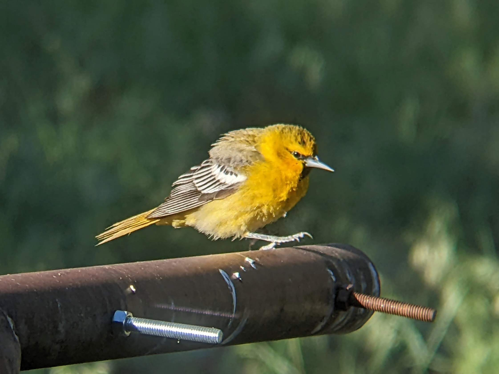

Do come in

Bollocks!
Links
Maps
Below are previews and download links to some georeferenced tiff maps I’ve made of the Los Alamos area including Bandelier and VCNP. These are designed to be used with the Avenza maps app. Avenza allows three personal maps with a free account so I've divided the area into that many maps. The downside is that these three maps are about 280MB each.
Los Alamos

Bandelier National Monument and White Rock

Valles Caldera National Preserve

Passport to Pajarito Plateau
I have chosen to leave the passport post locations for the PEEC Passport to the Pajarito Plateau off of these maps. However, I have developed a KML map layer containing the location of all the PEEC passport posts and hints for locating most of them.